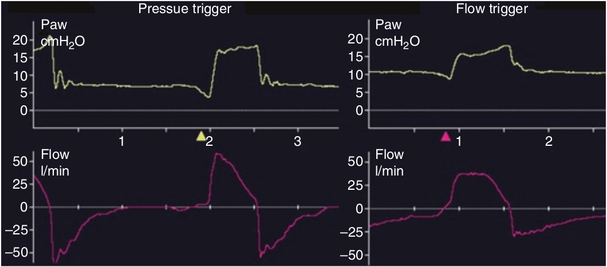

تلاش دمی بیمار بصورت تغییری در منحنی فشار یا شدت جریان نمایش می یابد. هنگام ترایگر فشاری، تلاش دمی بیمار باید بتواند فشار راه هوائی را از حد PEEP به میزان آستانه ای تنظیم شده کاهش دهد. در این شرایط، قبل از ترایگر فشار راه هوائی کاهش می یابد در حالیکه مقدار شدت جریان صفر است. هنگام ترایگر شدت جریانی، یک شدت جریان بازدمی پایه در تمام مدار ونتیلاتور وجود دارد و وقتی بیمار تلاش دمی انجام میدهد، کسری از این شدت جریان بسوی بیمار منحرف میشود و به همان میزان از شدت جریان بازدمی کاسته میشود. وقتی که این کاهش به میزان آستانه ای تنظیم شده برسد ترایگر روی میدهد. تحت این شرایط در زمان قبل از ترایگر فشار راه هوائی کم میشود و شدت جریان مختضری افزایش می یابد.

ترایگر دمی
۱ - بصورت افزایش فشار قبل از شروع تنفس مکانیکی بروز میکند
۲ - در صورت ترایگر شدت جریانی، در منحنی فشار قابل رؤیت نیست
۳ - شدت جریان همیشه با شروع تلاش دمی بیمار افزایش می یابد
۴ - بر حسب نوع ترایگر، منحنی شدت جریان در زمان قبل ترایگر متفاوت است
۵ - با سیستم ترایگر فشاری و شدت جریانی یکسان است